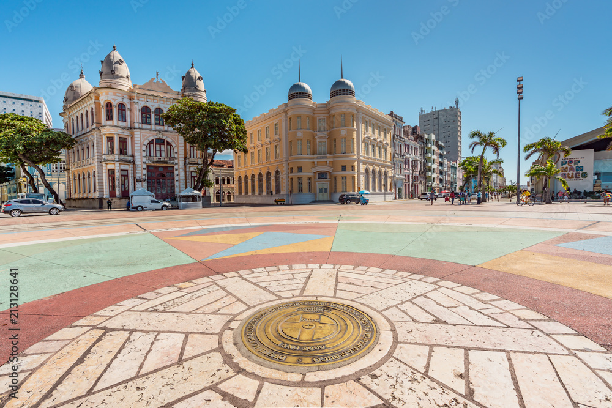
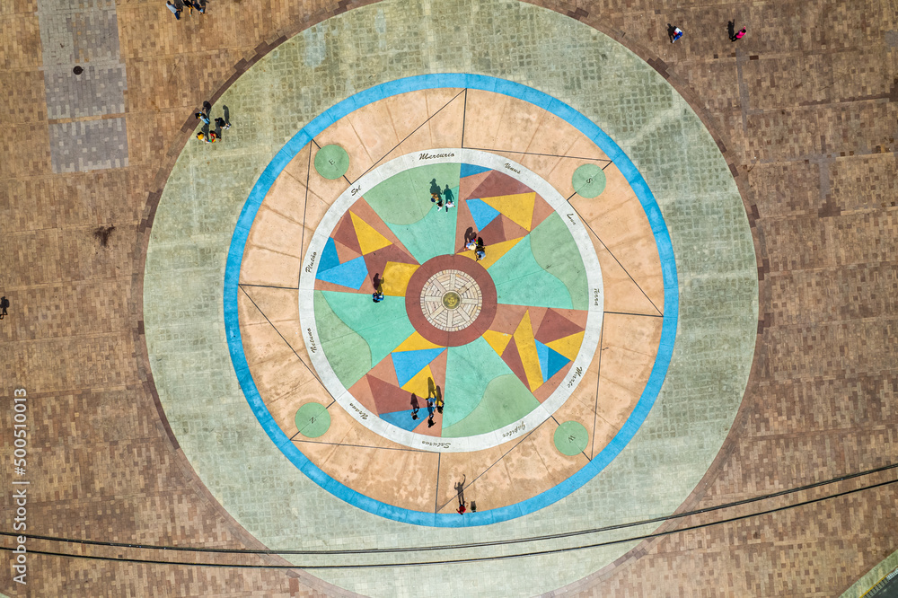
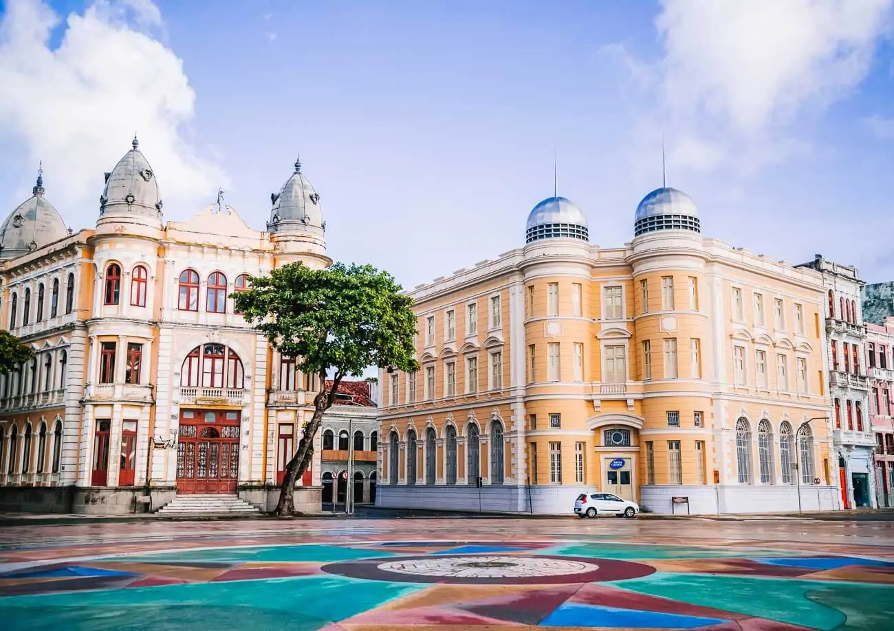
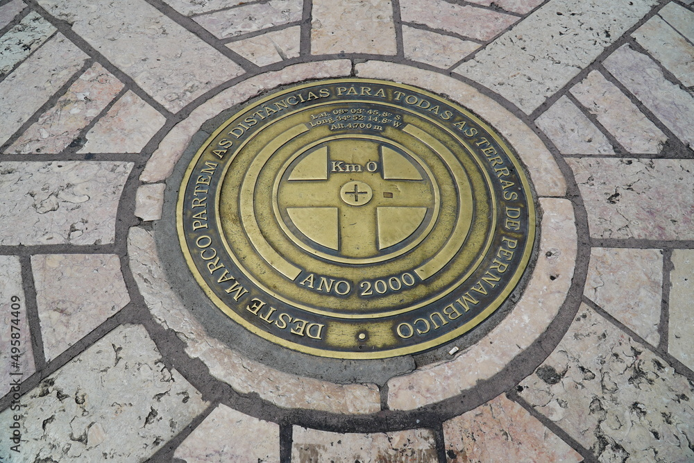
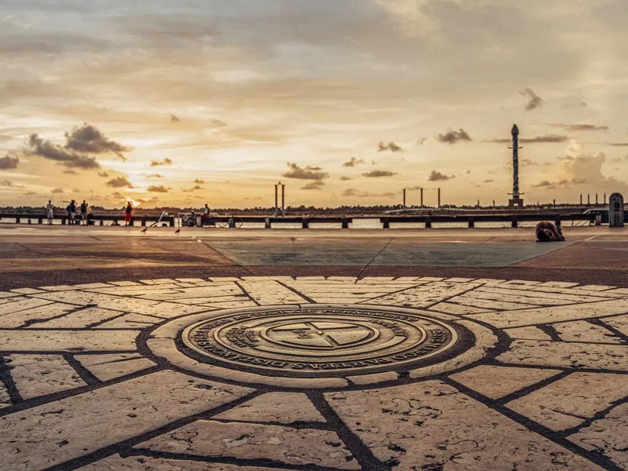

O Marco Zero de Recife é um dos pontos mais emblemáticos da cidade de Recife, que é a capital do estado de Pernambuco, no nordeste do Brasil. Trata-se de uma praça localizada no bairro do Recife Antigo, às margens do Rio Capibaribe, e é um local de grande importância histórica e cultural na região.
A principal característica do Marco Zero é um grande monumento que marca o centro geográfico da cidade e é um dos pontos de referência para medir as distâncias em Recife. O monumento é uma rosa dos ventos esculpida em mármore, que foi inaugurada em 1938 durante as comemorações do quarto centenário da cidade. A rosa dos ventos possui um mapa da cidade e indica as direções de pontos turísticos e cidades vizinhas.
 Além do monumento, o Marco Zero também é conhecido por sua grande área aberta, que frequentemente abriga eventos culturais, como shows, festivais, exposições de arte e feiras. A praça em si é cercada por casarões coloniais restaurados que agora abrigam bares, restaurantes, lojas de artesanato e espaços culturais, tornando-a um ponto de encontro popular para moradores e turistas.
O local também é conhecido por ser o ponto de partida para passeios de barco pelo Rio Capibaribe, que oferecem uma perspectiva única da cidade e de sua arquitetura ribeirinha. Os turistas podem explorar os canais e pontes que cortam o centro histórico de Recife a partir do Marco Zero.
O Marco Zero de Recife é muito mais do que um ponto de referência geográfico; ele simboliza a história, a cultura e a vitalidade da cidade e continua a desempenhar um papel importante na vida cotidiana e nas atividades culturais de Recife. É um lugar imperdível para quem visita a cidade, onde você pode mergulhar na rica herança cultural e histórica de Recife enquanto desfruta da animada cena contemporânea da região.
As raízes históricas do Marco Zero de Recife são entrelaçadas com a própria história da cidade e do Brasil. Em sua origem, a área servia como ancoradouro para embarcações que aportavam no Brasil durante o período colonial, estabelecendo-se como um ponto de intercâmbio comercial e de encontro de culturas diversas. Com o passar dos anos, Recife cresceu e se desenvolveu ao redor desse ponto vital, tornando-se um epicentro urbano de importância inegável. O monumento atual, representado pela imponente Rosa dos Ventos erguida em 1938, celebra os 400 anos da cidade, reforçando o significado simbólico da área como o coração pulsante de Recife e como um marco geográfico que orienta não apenas a cidade, mas toda a região circundante. Desde então, o Marco Zero perpetua seu papel como um local de profundo significado histórico e cultural, atraindo visitantes de todos os cantos do mundo para explorar a riqueza da herança desta cidade extraordinária.
 